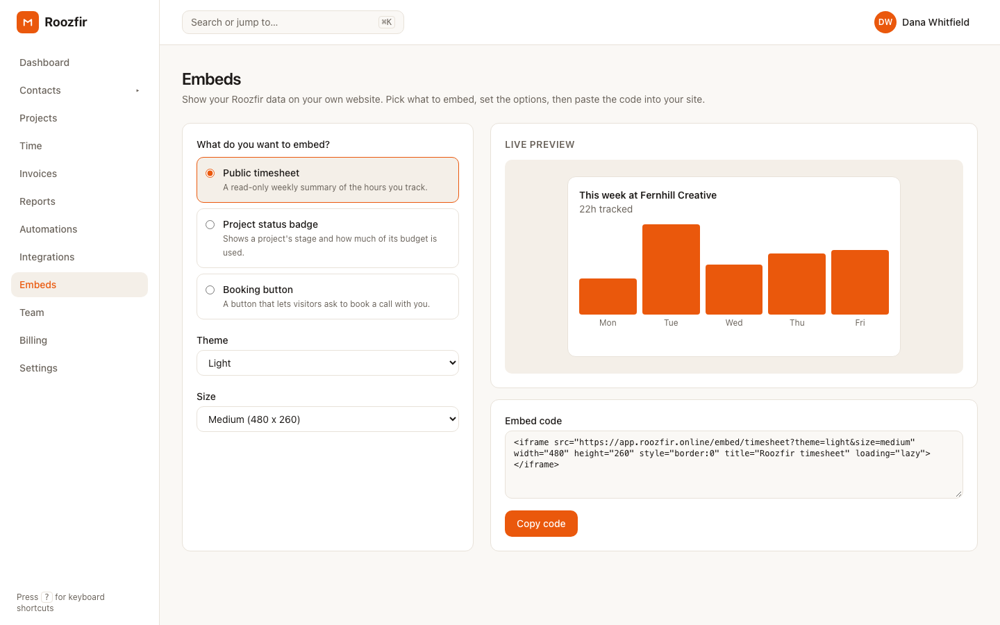
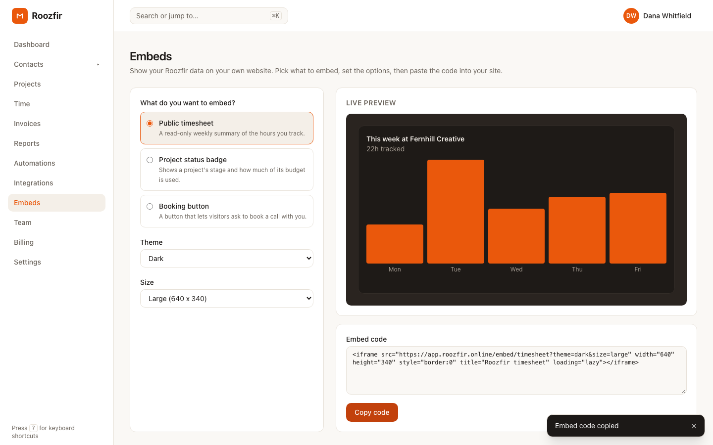
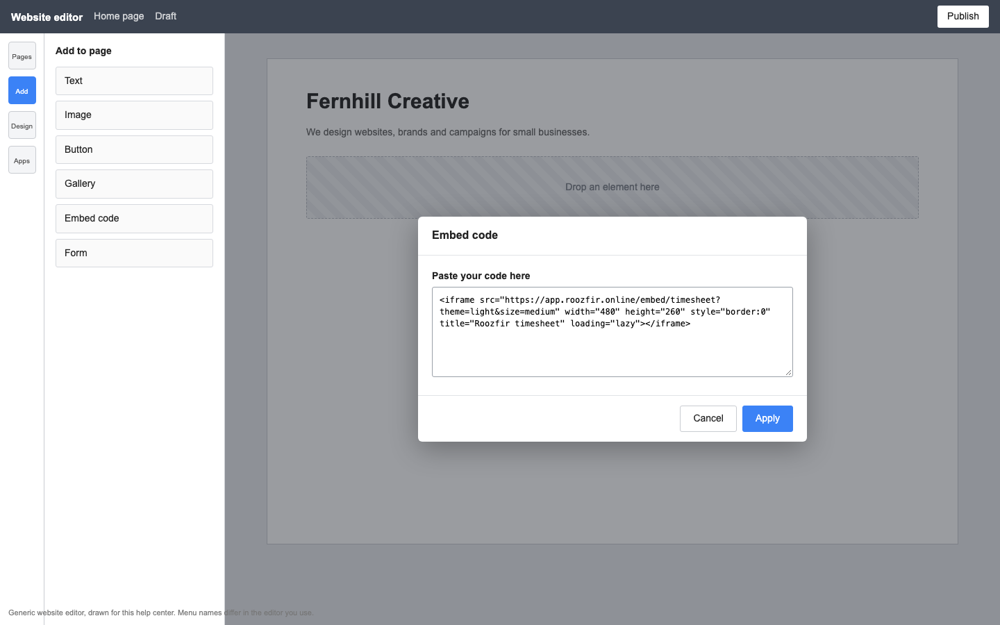
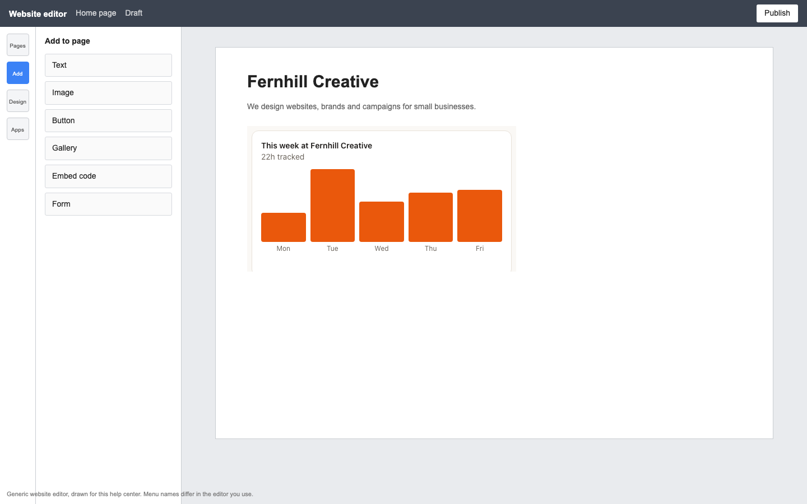

Help Center » Putting Roozfir on your website
How to embed your public timesheet on SharePoint
Show your weekly hours on your SharePoint site. You copy a small piece of code from Roozfir and paste it into your page.
- In Roozfir, click Embeds in the left-hand menu.
- Under What do you want to embed?, choose Public timesheet. The preview on the right shows what visitors will see.

The Embeds page with Public timesheet selected and a live preview - Choose a Theme (Light or Dark) and a Size.

The embed options set to the dark theme and the large size - Click Copy code. A message confirms the code is on your clipboard.

The Embeds page after clicking Copy code - In SharePoint, open the page and click Edit at the top right.
- Hover over the spot you want, click the + and choose the Embed web part.

A website editor with the Add menu open and Embed code highlighted - Paste the code into Website address or embed code.

The embed code window with the Roozfir code pasted in - Click Republish to make the page live.

The page in the editor showing the Roozfir timesheet
Tip: Your SharePoint administrator may need to allow outside websites in embeds (the "HTML Field Security" setting) before the box shows anything.